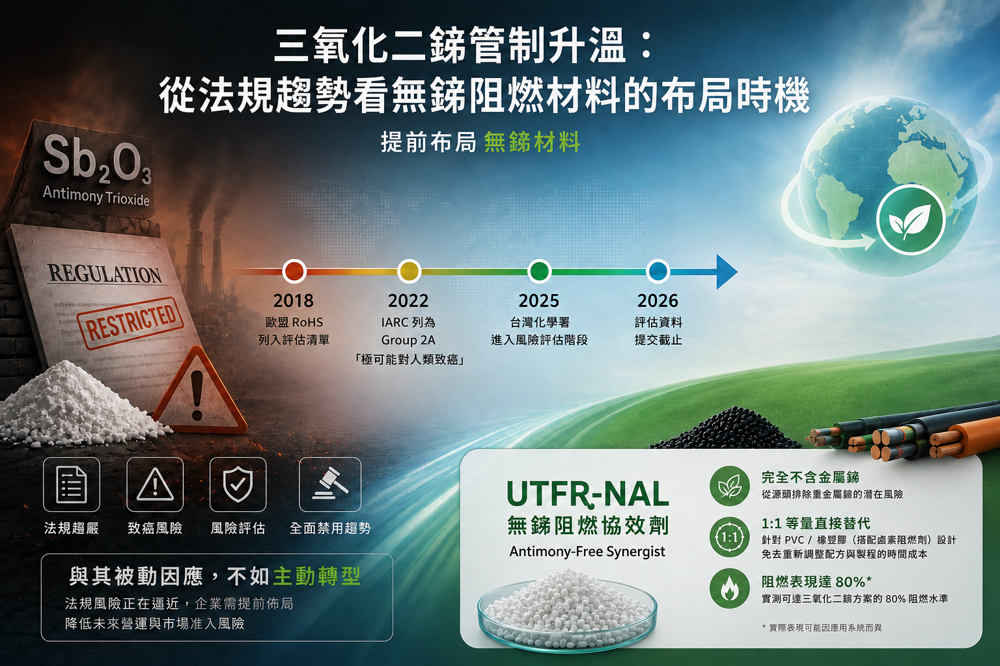

三氧化二銻管制升溫：從法規趨勢看無銻阻燃材料的布局時機

🔹提前做好法規風險管理： 環境保護趨勢不可逆，法規從第一階段的「限制與申報」走向第二階段的「全面禁用」已是必然（如 TBBPA、HBCDD ）。與其等強制禁用時手忙腳亂，不如現在提前佈局。
🔹本公司產品 UTFR-NAL 協效劑完全不含金屬銻。
🔹1:1 等量直接替代： 主要針對 PVC/橡塑膠（搭配鹵素阻燃劑）設計，原製程三氧化二銻加多少、本產品就加多少，免去重新調整配方與製程的時間成本。
🔹阻燃表現實測可達三氧化二銻方案的 80%，在尋求替代方案的同時，依然維持穩定的阻燃水準。
環保法規向來呈現「國外先行、國內跟進」的發展模式。回顧過去的四溴雙酚A（TBBPA）與六溴環十二烷（HBCDD）等案例來看，當政府開始要求強制申報、危害評估與暴露管理時，就代表「全面禁用」即將在幾年內尾隨而至。企業若延遲轉型布局，未來不只要面對更嚴格的法規審查，還可能面臨國際貿易的綠色防堵。
目前，三氧化二銻（Sb₂O₃）的管理亦呈現類似趨勢。從歐盟 RoHS 持續評估其潛在限制必要性、國際癌症研究機構（IARC）將其列為 Group 2A「極可能對人類致癌」，到台灣化學物質管理署要求相關業者進行危害及暴露評估，均顯示三氧化二銻的管理方向已逐漸由「資訊掌握」邁向「風險管理」。
對於電線電纜、工程塑膠及阻燃材料等產業而言，除了需符合現行阻燃法規要求外，也應留意未來國際市場可能出現更嚴格的管制措施。特別是在產品出口至歐洲等海外市場時，若相關法規進一步收緊，可能增加產品認證、市場准入的挑戰。
因此，盡早引進無銻（Antimony-free）阻燃協效劑的替代方案，不僅有助於降低未來法規變動帶來的不確定性，也能提前建立產品競爭與綠色國際貿易優勢。
一、三氧化二銻法規管制時間軸
2018｜歐盟吹響管制號角
RoHS Pack 15 將三氧化二銻列入評估清單，開始檢視其是否應納入限制物質。
2022｜致癌風險升級
IARC 將三氧化二銻列為 Group 2A「極可能對人類致癌」。
2024｜台灣完成第一階段登錄
年製造或輸入量達 1 噸以上之業者完成標準登錄。
2025｜進入風險評估階段
化學物質管理署指定三氧化二銻為首批危害及暴露評估物質。
2026｜評估資料提交截止
相關業者須完成危害及暴露評估資訊登錄。
二、解決方案推薦：UTFR-NAL 無銻阻燃協效劑
✅完全不含金屬銻： 從源頭排除重金屬銻的潛在危害與法規風險，滿足國際市場對於綠色環保材料的要求。
✅1:1 等量直接替代： 主要針對 PVC 與橡塑膠（搭配鹵素阻燃劑）設計。原製程三氧化二銻加多少、本產品就加多少，免去重新大幅調整配方與加工製程的時間成本。
✅經實測，本產品的阻燃表現可達傳統三氧化二銻方案的 80% 所需的阻燃水準。
← 返回產業資訊列表